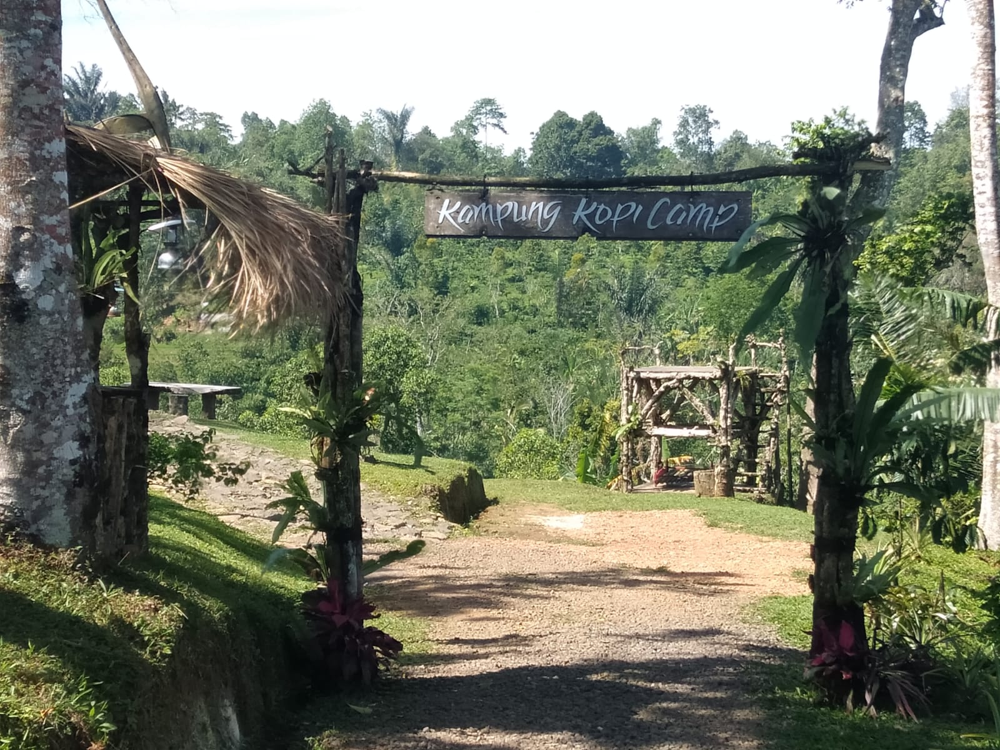

Kalangoan Catur Desa: Simfoni Tradisi dan Alam
Telusuri kekayaan tradisi serta keindahan alam yang membentuk identitas Kecamatan Pupuan
Tradisi dan Destinasi Wisata Alam
Kecamatan Pupuan dikenal dengan tradisi-tradisi unik yang mencerminkan harmoni antara manusia, alam, dan spiritualitas. Kali ini kami membahas 4 dari 14 desa di Kecamatan Pupuan yakni, Pupuan, Pujungan, Bantiran, dan Batungsel. Mulai dari tradisi, budaya, hingga destinasi wisata alam yang memanjakan mata.

Desa Pupuan
Desa Pupuan memiliki sejumlah tradisi, namun yang paling mencolok adalah tari Rejang Ayunan yang penuh makna spiritual.

Desa Bantiran
Bantiran melestarikan Rejang dengan formasi unik yang mencerminkan kesatuan komunitas.

Desa Pujungan
Memiliki salah satu alat musik yang masuk dalam warisan takbenda, hingga menjadi ciri khas Desa Pujungan.

Desa Batungsel
Batungsel menghidupkan Rejang dengan irama gamelan yang memukau dan penuh makna.
Rejang Ayunan

Rejang Ayunan Desa Pupuan & Bantiran
Rejang Ayunan merupakan tarian sakral yang penuh makna spiritual, menggambarkan harmoni antara manusia, alam, dan Tuhan.
Sejarah Panyunggalan: Desa Bantiran dan Desa Pupuan
Akar Kuno dan Jejak Prasasti
Jejak peradaban di wilayah ini bermula dari Desa Bantiran, sebuah desa kuno yang memegang peranan vital dalam tatanan sejarah Bali. Keberadaan Bantiran telah tercatat dalam berbagai prasasti penting, di antaranya Prasasti berangka tahun Saka 923 (1001 Masehi) pada masa pemerintahan Ratu Sri Gunapriyadharmapatni dan Raja Sri Dharmodayana Warmadewa.
Jauh sebelumnya, nama Nayakan Bantiran (Tetua Desa Bantiran) juga telah disebut dalam Prasasti Gobleg (Pura Batur A) pada era Raja Sri Ugrasena (915-936 Masehi). Ketangguhan masyarakatnya pun teruji dalam sejarah; pada tahun 1150 Masehi, Raja Sri Maharaja Jayasakti bahkan pernah memberikan keringanan pajak selama lima tahun bagi penduduk Bantiran yang tersisa pasca-peristiwa besar.
Lahirnya Pupuan dan Ikatan Spiritual Pura Kayu Padi
Pada mulanya, wilayah Pupuan bukanlah sebuah pemukiman, melainkan area terbuka yang berfungsi sebagai peluputan sapi (tempat penggembalaan). Hingga tahun 1988, Pupuan secara administratif dan adat masih menjadi satu kesatuan dengan Desa Bantiran.
Momentum transisi terjadi pada tahun 1988 saat terjadi pemekaran wilayah kedinasan dan adat. Pura Kayu Padi yang semula milik Bantiran diserahkan kepada Pupuan sebagai pengikat spiritual (Tetamian).
Pusaka Budaya: Tari Rejang Ayunan
Tari Rejang Ayunan diperkirakan lahir bersamaan dengan mulai terbentuknya pemukiman di Pupuan. Pementasan perdana tercatat saat upacara Ngusaba Tegteg setelah pembangunan Pura Puseh dan Pura Desa selesai. Tarian ini mencerminkan pengaruh ajaran Mpu Kuturan melalui konsep Tri Khayangan.
Sumber Informasi:
Hasil Wawancara dengan Tokoh Adat dan Penglingsir Desa Adat Pupuan & Bantiran (2026)
Arsip Sejarah Desa dan Kebudayaan
Portal Resmi Pemerintah Provinsi Bali
Kajian Prasasti Bali Kuno (Prasasti Saka 923, Prasasti Gobleg, Prasasti Pura Desa Sading)